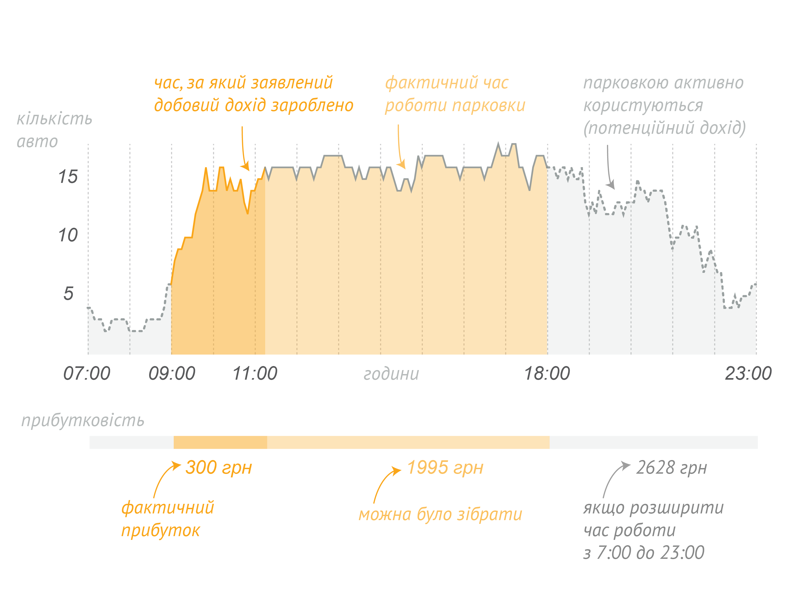
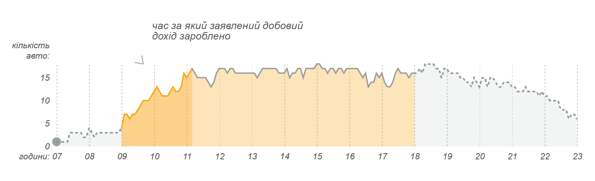
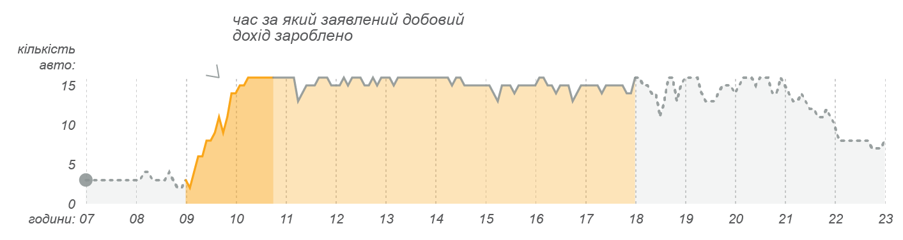
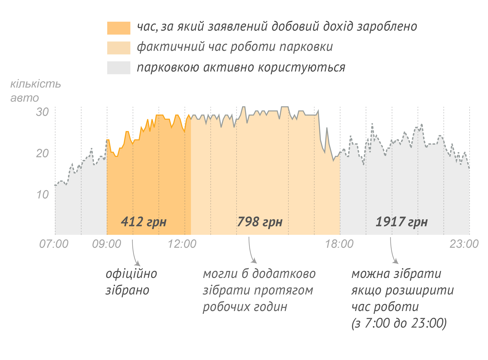
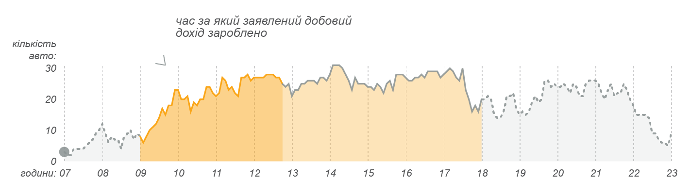
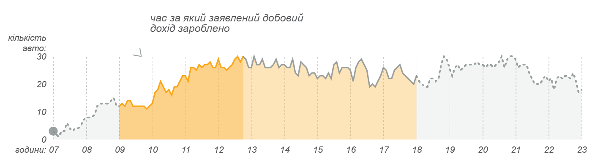
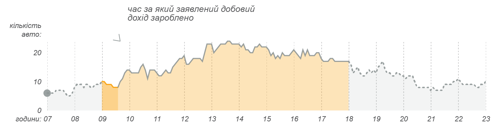
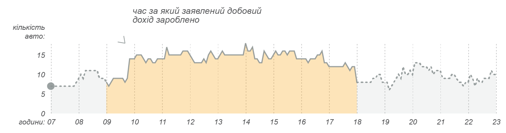

За 4 місяці цього року служба столичного паркування отримала 7,4 млн грн доходу, витративши на утримання мережі паркувальників 7,8 млн грн.
За 4 місяці цього року служба столичного паркування отримала 7,4 млн грн доходу, витративши на утримання мережі паркувальників 7,8 млн грн.
Парковки — це готівка. Скільки дядько в жилетці комунального підприємства «Київтранспарксервіс» припаркує на вулиці автомобілів, зі скількох і скільки візьме грошей, проконтролювати практично неможливо. Та ті суми, які декларує зараз підприємство, смішні. Наприклад, у липні 2017 року, за даними інформаційної системи «Майно», найбільше грошей зібрали 5 числа — аж 53 тисячі гривень. За даними київських активістів із Реанімаційного пакету реформ, у місті 6689 паркомісць. Тобто в цей грошовий день одне паркомісце принесло Києву 7 гривень 90 копійок.
Ми поставили відеокамери над трьома парковками і порахували, скільки автомобілів реально паркується, та порівняли з офіційними даними щодо грошей, які приносять місту ці парковки. Офіційно київські парковки працюють з 9:00 до 18:00, ми рахували тільки цей проміжок.
Перший пункт спостереження — парковка біля торгового центру «Гуллівер» на вулиці Басейній — в середньому за три дні офіційно паркова здала 243 грн, тоді як ми нарахували в середньому 2015 грн.
Друга парковка — на вулиці Суворова, поблизу Київміськбуду. Офіційно дала в середньому 398 гривень, за нашими підрахунками — 2459.
Третя — між площею Льва Толстого і станцією метро «Олімпійська». Офіційно — 42, за нашими підрахунками — 1468.
Ми рахували, скільки стояв кожен автомобіль і множили час на офіційні розцінки. Проте паркувальники часто роблять знижку і беруть, наприклад, за дві години, як за одну тощо.
Парковка № 1003(вул. Басейна, 12) 8 машиномісць, перший день
Парковка № 1003, другий день
Парковка № 1003, третій день
Парковка № 2051 (Суворова, 4), 32 машиномісця, перший день
Парковка № 2051, другий день
Парковка № 2051, третій день
Парковка № 2026 (Велика Васильківська, 58-50/23),
18 машиномісць, перший день
Парковка № 2026, другий день
Парковка № 2026, третій день
